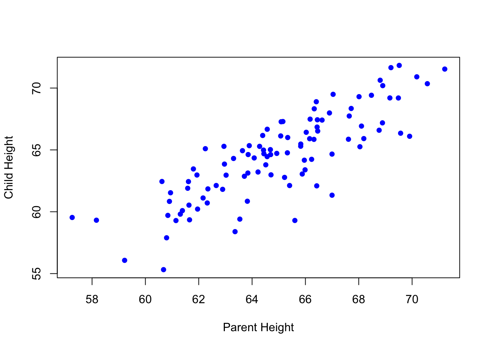

[1] 45Introduction to R
Goals of the lecture
- Brief tooling.
- Why R?
- Introduction to “base R”.
- Brief preview of the
tidyverse.
Tooling (briefly)
One of the most frustrating parts of programming is tooling: getting your computer set up to actually do the stuff you want to learn about.
In this class, we’ll be working with the R programming language using a desktop IDE called RStudio.
- Links to download and install RStudio can be found here.
- Follow the instructions: will include downloading and installing R.
- To avoid other tooling headaches, we’ll just be using Canvas for course management.
- We won’t be relying on GitHub, but it’s also very useful and important!
Why R?
There are many different programming languages. Why use R?
Introduction to “base” R
“Base” R just refers to the set of functions and tools available “out of the box”, without using additional packages like
tidyverse.
Base R includes (but is not limited to):
- Basic mechanics like variable assignment.
- Simple functions like
plot, as well as core types like vectors. - Statistical methods like
lmandanova(which we’ll discuss later).
Variable assignment
Variables allow us to store information (values, vectors, etc.) so we can use it again later.
Here, we create a variable called account, so we can add to it.
Basic variable types
Each variable has a certain type or
class.
You can do different things with different types of variables. For instance, you can’t calculate the mean of multiple characters, but you can for numeric types.
| Type | What it is | Example |
|---|---|---|
| numeric | Numbers (integers & decimals) | age <- 25, gpa <- 3.7 |
| character | Text strings | name <- "Alice" |
| logical | TRUE/FALSE values | passed <- TRUE |
| integer | Whole numbers only | count <- 5L |
| factor | Categorical data | grade <- factor("A") |
Basic Operations with Numeric Variables
numeric variables allow for a number of arithmetic operations (like a calculator).
Vectors: Building Blocks of R
A vector is a collection of elements with the same
class.
Vectors can be created with the c(...) function.
[1] 25 30 32[1] 25Working with vectors
Like scalars, numeric vectors can be manipulated mathematically.
[1] 26 31 33[1] 125 150 160[1] 26 32 35Functions
A function implements some operation; you can think of it as a verb applied to some input.
In CSS, you’ll often be using functions to summarize your data (like a vector).
[1] 67[1] 67.5Creating vectors from distributions (pt. 1)
In addition to creating vectors by hand, we can use functions to create random vectors by sampling from some distribution, e.g., a normal distribution (rnorm(x, mean, sd)).
Creating vectors from distributions (pt. 2)
There are also many types of distributions beyond normal distributions.
- Uniform distributions: use
runif. - Binomial distributions: use
rbinom. - Poisson distributions: use
rpois. - Sampling from these distributions (and visualizing them) is a helpful way to learn about different statistical distributions.
Interim summary
So far, we’ve covered a number of core topics in base R.
- Assigning and working with variables.
- Different types of variables.
- Applying functions to variables.
- Creating vectors and visualizing them with
hist. - Sampling from statistical distribution.
Dataframes
The
data.frameclass is a “tightly coupled collection of variables”; it’s also a fundamental data structure in R.
- Like a matrix, but with labeled columns of the same length.
- Each column corresponds to a vector of values (numbers, characters, etc.).
- Supports many useful operations.
- Analogous to
pandas.DataFrameinPython!
Creating a data.frame
- A
data.framecan be created using thedata.framefunction. - Pass in labeled vectors of the same length.
hours_studied test_score
1 0 70
2 2 85Exploring a data.frame
We can use functions like nrow, head, and colnames to learn about our data.frame.
[1] 6[1] "hours_studied" "test_score" hours_studied test_score
1 0 70
2 2 85'data.frame': 6 obs. of 2 variables:
$ hours_studied: num 0 2 2 3 5 8
$ test_score : num 70 85 89 89 94 95
NULL hours_studied test_score
Min. :0.000 Min. :70.00
1st Qu.:2.000 1st Qu.:86.00
Median :2.500 Median :89.00
Mean :3.333 Mean :87.00
3rd Qu.:4.500 3rd Qu.:92.75
Max. :8.000 Max. :95.00 Accessing individual columns
You can access individual columns using the dataframe$column_name syntax.
Filtering a data.frame
In base R, you can filter a data.frame using the df[CONDITION] syntax, where CONDITION corresponds to a logical statement.
Simple bivariate plots
Once you have multiple vectors, you can plot the relationship between them, e.g., using a simple scatterplot.
Calculating correlations
You can also quantify the relationship between variables, e.g., using a Pearson’s r correlation coefficient.
Pearson's product-moment correlation
data: df_example$hours_studied and df_example$test_score
t = 2.8958, df = 4, p-value = 0.0443
alternative hypothesis: true correlation is not equal to 0
95 percent confidence interval:
0.03391115 0.97998161
sample estimates:
cor
0.8228274 Working with missing data
Real data often contains missing values. R represents these as NA (Not Available). We’ll discuss these in more detail next week, but here’s a preview:
Working with missing data (pt. 2)
You can remove missing data by filtering the data.frame, using the syntax below and the is.na condition.
Putting it together: simulating data
So far, we’ve discussed a number of useful concepts in R:
- Working with vectors.
- Simulating random distributions using
rnorm. - Creating
data.frameobjects and plotting or analyzing them.
Simulating data

[1] 0.8314602A conceptual preview of the tidyverse
Next week, we’ll discuss the tidyverse: a set of packages and functions developed to make data analysis and visualization in R easier.
This includes (but is not limited to):
- Functions for transforming data, e.g.,
filterormutate. - Functions for merging data, like
left_joinorinner_join. - Functions for visualizing data, like
ggplot.
Lecture wrap-up
This course is not primarily about programming in R, but programming in R is a foundational skill for other parts of this course.
This lecture (and accompanying lab) is intended to give you more comfort with the following concepts:
- Working with variables and different types of data.
- Creating and working with vectors.
- Simple plotting.
- Working with
data.frameobjects.